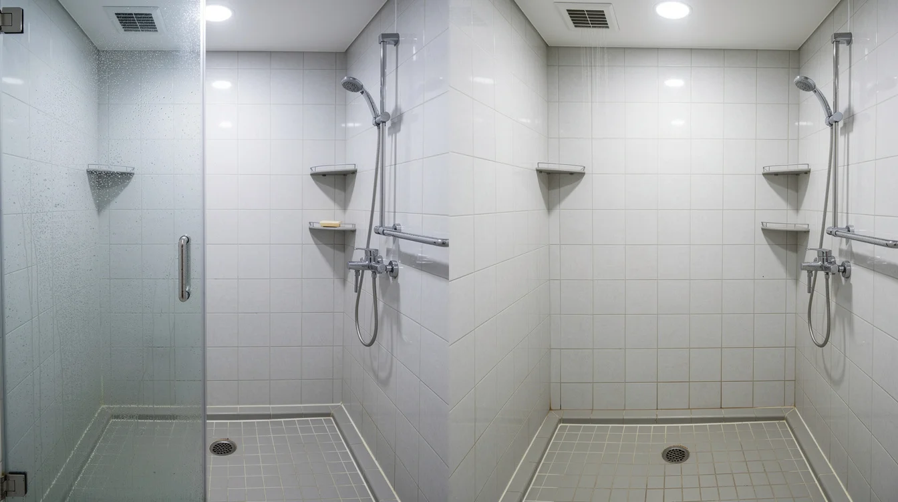

먼저 전체 공간을 확인합니다
청소를 시작하기 전 현관부터 방과 거실, 주방, 욕실, 창틀과 수납공간까지 전체 구조를 확인합니다. 같은 평수라도 창의 수와 수납장 구조, 오염 상태가 다르기 때문에 공간별로 작업 순서를 잡아 진행합니다.

청소 포인트
창틀 레일, 몰딩 위쪽, 수납장 안쪽처럼 평소 눈에 잘 들어오지 않는 부분까지 구역별로 확인합니다.
창틀 레일, 몰딩 위쪽, 수납장 안쪽처럼 평소 눈에 잘 들어오지 않는 부분까지 구역별로 확인합니다.
주방은 싱크대와 후드 주변, 비어 있는 수납장 내부를 확인하고 욕실은 수전과 거울, 타일, 배수구 주변을 중심으로 작업합니다. 이후 방과 거실 바닥까지 정리하고 전체적으로 빠진 공간이 없는지 다시 살펴봅니다.